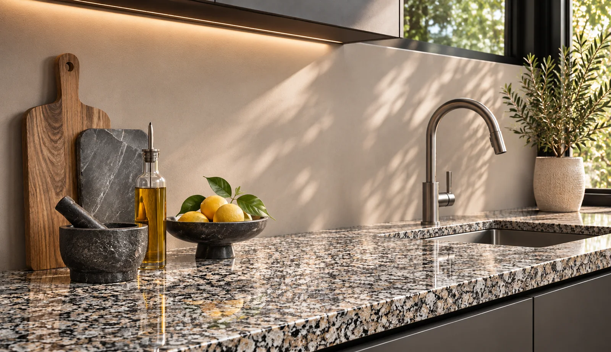
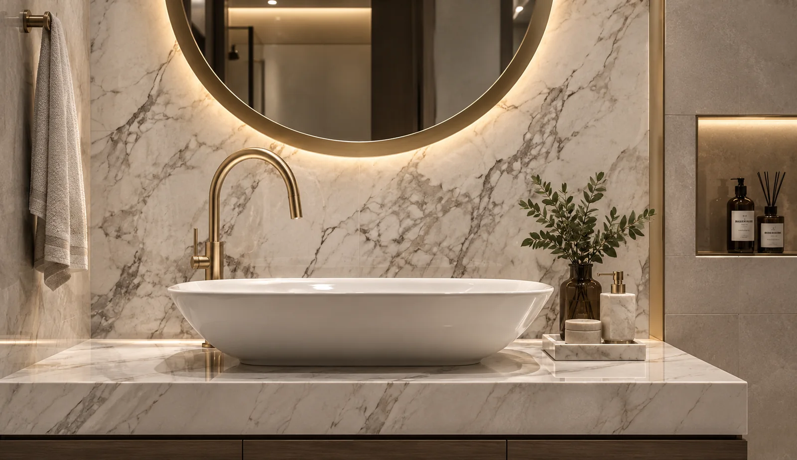
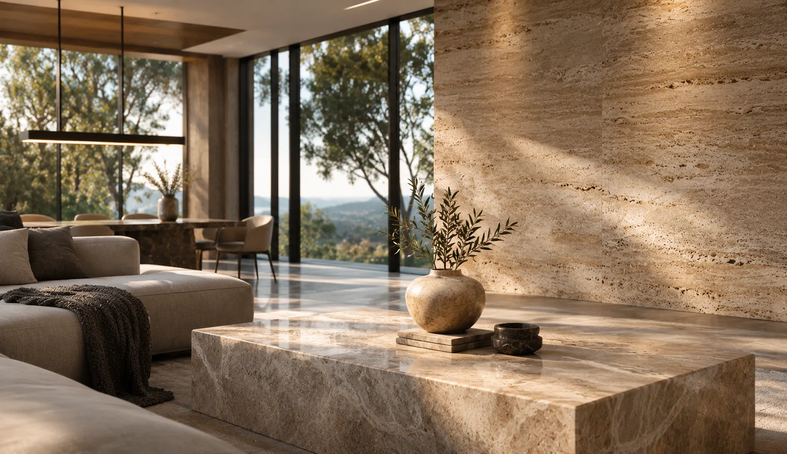
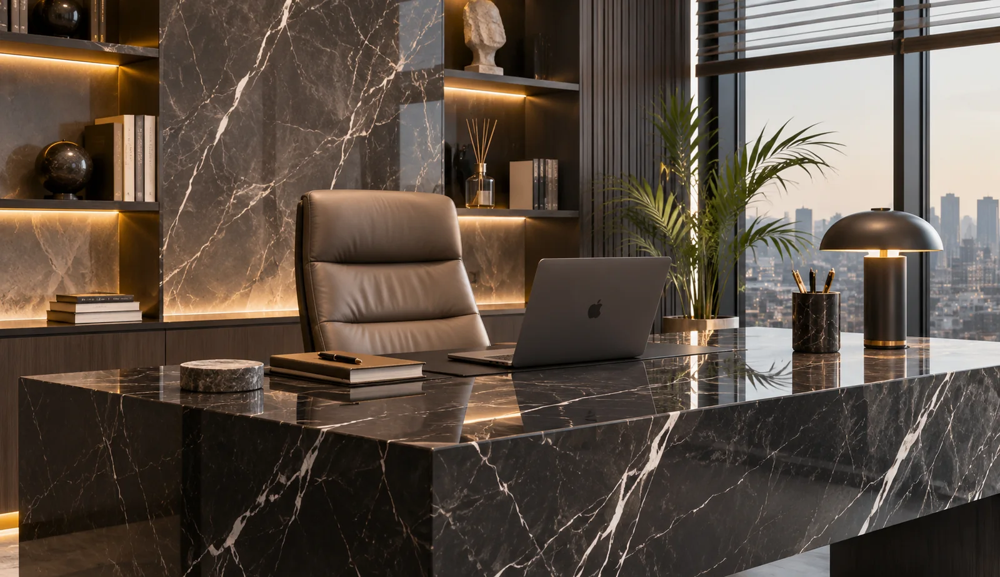
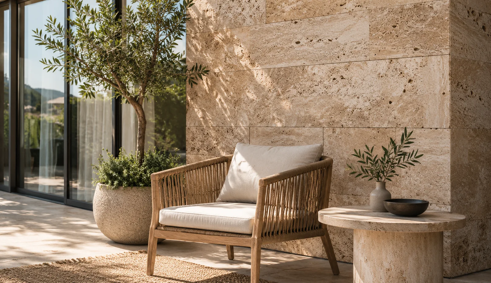

BEKAMAR / UYGULAMA ALANLARI
Her Mekanda
Doğal Bir Dokunuş.
Doğanın milyonlarca yılda şekillendirdiği yüzeyler, yaşam alanlarında zamansız bir estetiğe dönüşüyor. Mutfaktan banyoya, iç mekanlardan mimari detaylara kadar doğal taşın sunduğu farklı uygulama alanlarını keşfedin.
ALANLARI KEŞFEDİN ↓
MUTFAK / YÜZEY VE ADA01 / YAŞAMIN MERKEZİ
Mutfak
Taş yüzeyler, mutfağın günlük akışına doğal bir karakter kazandırır. Tezgah ve ada tasarımlarından tezgah arası duvar kaplamasına, yemek alanları ve masalara kadar malzeme bütünlüğü kuran fikirleri keşfedin.
- Mutfak tezgahı ve ada
- Tezgah arası duvar kaplaması
- Mutfak masası ve yemek alanı

BANYO / TAŞ VE SU02 / GÜNLÜK RİTÜEL
Banyo
Doğal dokular ve dengeli tonlar, banyoda sakin ve kişisel bir atmosfer oluşturur. Taşı lavabo ünitesi, duş, duvar ve zemin kaplamaları ya da küvet çevresi gibi farklı yüzeylerde değerlendirin.
- Banyo tezgahı ve lavabo üniteleri
- Duş alanları ve küvet çevresi
- Duvar ve zemin kaplamaları

OTURMA ALANLARI / İÇ MEKAN03 / MALZEME VE ATMOSFER
Oturma Alanları
ve İç Mekan
Taşın damarları, rengi ve dokusu yaşam alanlarının görsel odağına dönüşebilir. Duvar kaplamalarından şömine çevresine, masalardan mobilya yüzeylerine kadar iç mekanda farklı ölçeklerde kullanın.
- TV ünitesi ve arka duvar kaplamaları
- Şömine, sehpa ve yemek masası
- Dekoratif duvar, konsol ve mobilya yüzeyleri

MİMARİ DETAYLAR / İŞÇİLİK04 / MİMARİYE İŞLENEN DOKU
Mimari
Detaylar
Özenle seçilen taş yüzeyler, mimari geçişleri ve işlevsel detayları tamamlar. Merdivenlerden denizliklere ve duvarlara kadar konut ve ticari projelerde malzemenin karakterini öne çıkarın.
- Merdiven basamakları ve rıhtlar
- Pencere denizlikleri, kapı ve geçiş detayları
- Kolon, duvar kaplamaları ve resepsiyon bankoları

DIŞ MEKAN / TERAS05 / MİMARİ VE PEYZAJ
Dış Mekan
Doğal taş, açık alanlarda çevresiyle birlikte yaşlanan güçlü bir mimari ifade sunar. Cephe ve zeminlerden teras, havuz çevresi ve açık hava mutfaklarına uzanan uygulamaları inceleyin. Ürün seçimi iklim, yüzey ve uygulama koşullarına göre yapılmalıdır.
- Dış cephe ve zemin kaplamaları
- Teras, balkon, bahçe ve havuz çevresi
- Açık hava mutfakları
PROJENİZ İÇİN
Hayalinizdeki Mekanı
Birlikte Tasarlayalım.
Projeleriniz için doğal taş ve kompoze yüzey seçeneklerini keşfedin. Bekamar koleksiyonlarıyla yaşam alanlarınıza değer katın.